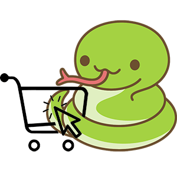
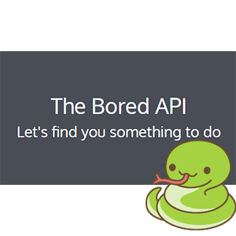
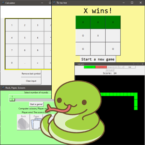

Kaiserreich is one of the most popular Hearts of Iron IV mods with 800k subscribers. My contributions include coding, bugfixing, testing and reporting bugs
Technologies - Paradox Scripting Language
To increase the quality of the mod development, I created a testing framework to perform integration tests of various mod files with more than 60 tests united by common classes and functions
Technologies - Python, Pytest, Object-oriented programming, Jenkins
To reduce the number of manual testers required for collecting balancing data, I wrote scripts for paralleled automated game launching, running, collecting, parsing and cleaning logs in a loop, enabling hands-off data generation with impossible earlier effectiveness and cost-efficiency
Technologies - Python
Another huge time consumer for Kaiserreich testing team was filling Google forms with data collected during run. With the help of log parsing and Webdriver capabilities the time to fill a single form is reduced from minutes to seconds
Technologies - Python, Webdriver
Automation of all tests on popular human benchmark site, such as reaction, memory, typing speed. Next level of human performance with the power of programming
Technologies - Python, Webdriver, Pytest, Page Object pattern

Ecommerce website test automation demo in Python using Page Object pattern
Technologies - Python, Pytest, Webdriver, Page Object pattern

API test automation demo in Python using requests library
Technologies - Python, Pytest, Requests lib

Various GUI Python programs - "rock, paper, scissors" game, "snake" game, "tic tac toe" game, clock, calculator, text editor, programs for string generation and parsing, featuring Tkinter library to create user interface
Technologies - Python, Tkinter lib